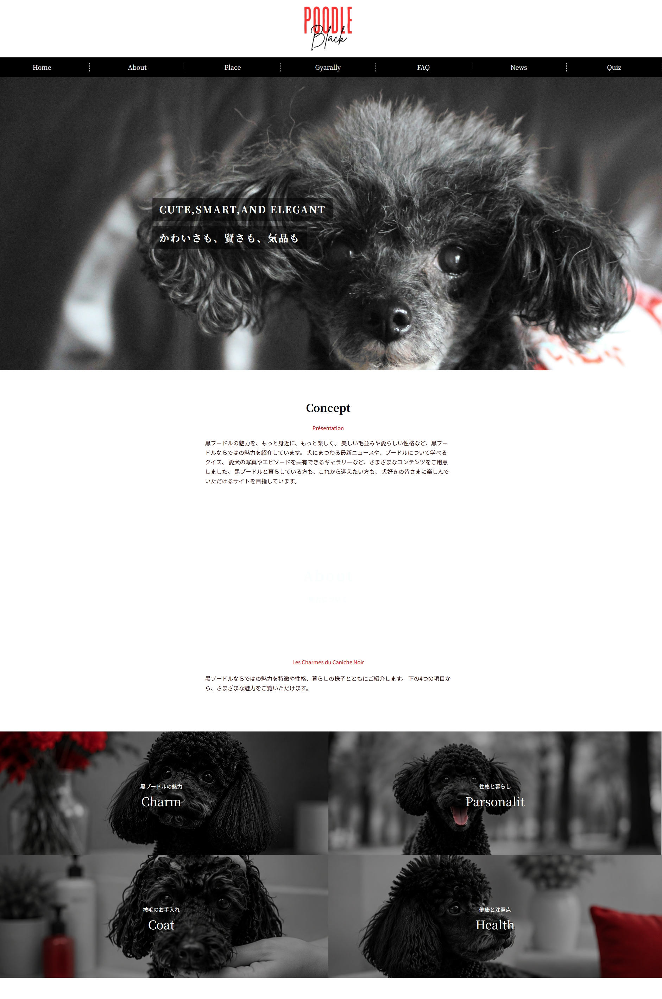
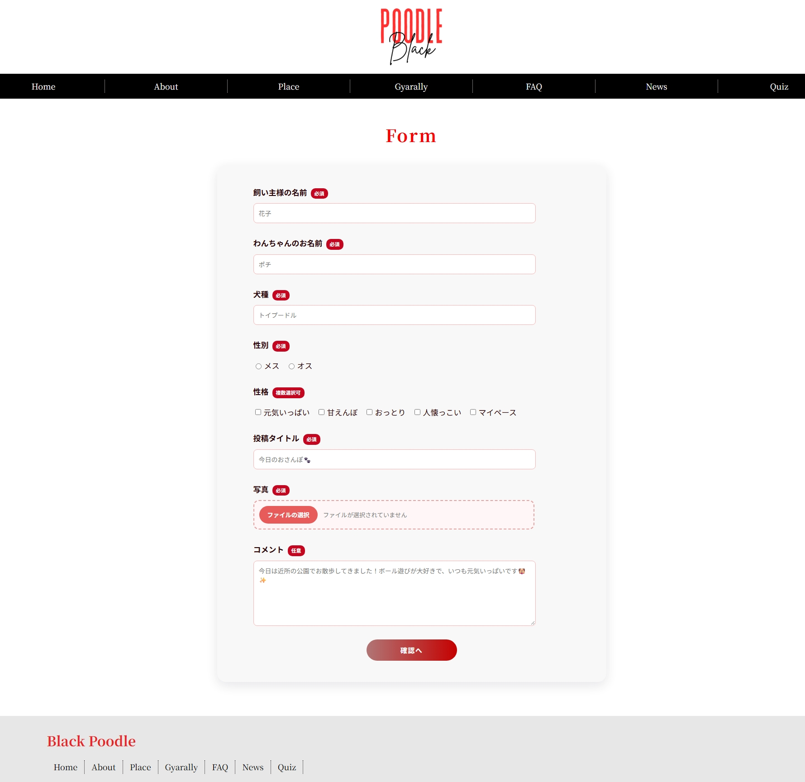
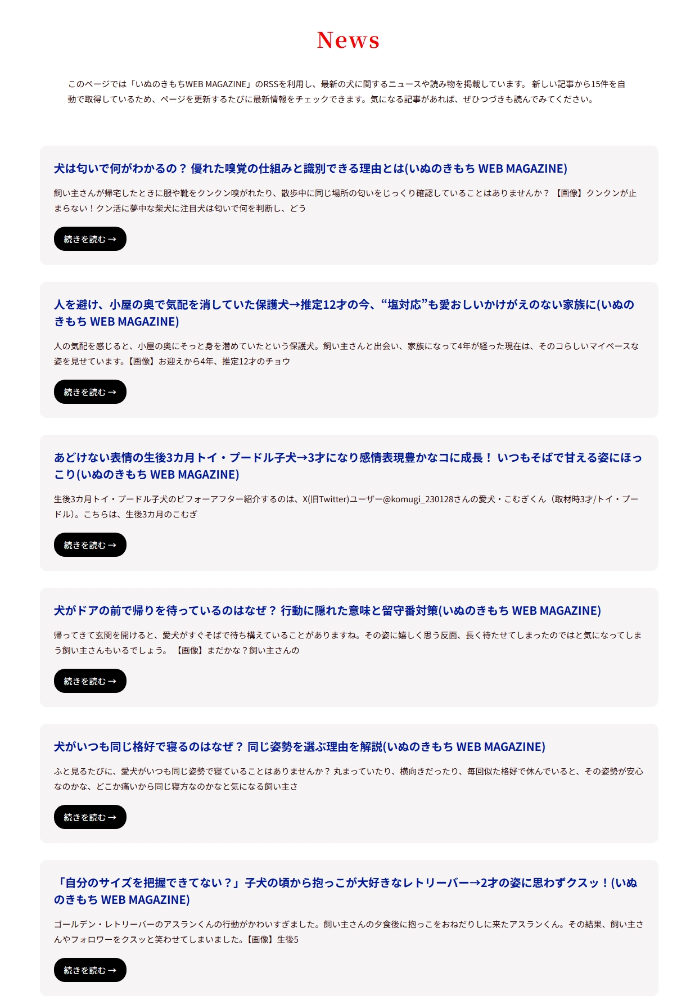

画像①：トップページ
image/bp-home.jpg
image/bp-home.jpg
FEATURE 01
黒プードルの紹介・サイト内ナビゲーション
黒プードルをテーマに、写真や情報を見やすく配置したWebサイトです。複数のページを設け、紹介コンテンツから参加型コンテンツへ移動できる構成にしました。
- 黒プードルをテーマにしたページデザイン
- 複数ページでの情報掲載
- 画面幅に合わせたレイアウト調整
TRAINING PROJECT / 04
黒プードルをテーマにした参加型Webサイト
黒プードルの魅力を紹介するサイトを、PHP・MySQLを使って機能拡張。写真投稿ギャラリー、クイズ、犬のニュース表示など、閲覧者が楽しめる仕組みを実装しました。
01 / OVERVIEW
黒プードルをテーマに、写真や情報を楽しめるWebサイトを制作しました。当初の紹介ページに加え、PHP・MySQLの学習内容を活用し、訪問者が参加できる機能を追加しました。
犬の写真を投稿するギャラリー、回答を保持できるクイズ、RSSによるニュース表示を実装し、静的な紹介サイトから、データの登録・取得・表示ができるサイトへ発展させました。
02 / FEATURE DETAILS
写真投稿・クイズ・ニュース配信などを、実際の画面とあわせて紹介します。

FEATURE 01
黒プードルをテーマに、写真や情報を見やすく配置したWebサイトです。複数のページを設け、紹介コンテンツから参加型コンテンツへ移動できる構成にしました。

FEATURE 02
自慢の「うちの子」を紹介できる写真投稿機能です。写真と入力内容を受け取り、確認画面を経てMySQLに登録します。画面遷移の途中ではSESSIONを使って入力情報を保持します。

FEATURE 03
投稿された写真や情報をデータベースから読み込み、ギャラリーで一覧表示します。また、Cookieを利用し、同じブラウザからの投稿を1日1回に制限する仕組みを設けました。

FEATURE 04
黒プードルに関する問題に1問ずつ回答できるクイズを制作しました。SESSIONで回答状態を保持し、前の問題への移動や回答の変更、確認画面を経た結果表示に対応しています。

FEATURE 05
犬に関するニュースをRSSから取得し、サイト上で新しい記事を確認できるようにしました。外部から取得した情報をPHPで処理して表示する機能です。
03 / LIVE DEMO
公開URLの設定後、写真投稿やクイズなどを実際に操作できます。
写真投稿、ギャラリーの閲覧、クイズ、ニュース一覧などをお試しください。
※ 投稿は同一ブラウザで1日1回の制限を設けています。公開時の運用設定に合わせて案内を調整してください。
04 / VIDEO
写真の投稿からギャラリーへの反映、クイズの回答までを動画でも紹介します。
動画ファイルを配置するまでは再生できません。実際の録画内容に合わせて説明を調整してください。
05 / DEVELOPMENT
フォームで受け取った情報をSESSIONで保持し、確認画面を通してから画像と投稿内容をMySQLに登録する構成にしました。
Cookieを使って同一ブラウザからの投稿回数を制限し、投稿済みの場合には案内を表示できるようにしました。
PHPのSESSIONを利用し、ページを移動しても回答を保持できるようにしました。前の問題に戻って回答を変えられるようにしています。
ニュースを手入力するのではなく、RSSから取得して表示することで、外部情報をサイト内に取り込む仕組みを学びました。
06 / GENERATIVE AI
開発過程での生成AIの利用を紹介します。
生成AIを活用した具体的な内容は、実際の制作過程に合わせて記入してください。例：フォーム確認画面とSESSION管理の実装方法を調べる際の補助。
生成AIを、実装方法の調査やエラーの原因を整理するための補助として活用しました。提案された内容は処理を確認しながら適用し、実際の動作を見て修正する形で開発を進めました。
07 / NEXT STEPS
写真投稿機能について、入力エラー時の案内や画像ファイルの検証などをより分かりやすくし、利用しやすい投稿画面に改善したいと考えています。
また、クイズやニュース表示についても、さまざまな端末での動作確認を進め、サイト全体の操作性と安定性を高めたいと考えています。